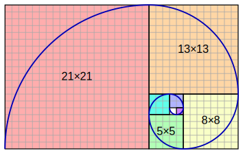
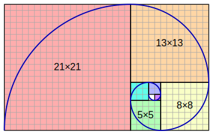

递归(Recursion)
李艳生
湖北师范大学
物理与电子科学学院
2020年春季
回顾
-
循环(loop):满足条件时重复执行一段代码
-
迭代(Iterate):按顺序访问线性结构中的每一项
-
遍历(Traversal):按规则访问非线性结构中的每一项
引入
请大家思考要重复执行一段代码，除了循环，还有什么方法？
内容
递归定义(重点)
递归过程(重点)
递归性能
常见递归
任务
递归定义
- 递归是将大问题转化成小问题，通过求解小问题反推求出大问题
- 递归是一种函数自已调用自已的方法。
- 递归是函数式编程的重要方法。
function recursiveFunction(someParam){
recursiveFunction(someParam);
}
递归定义
- 递归包含递归调用和递归出口两部分。
- 循环包含循环体和终止条件两部分。
- 递归与循环可相互转化
function understandRecursion(doIunderstandRecursion) {
const recursionAnswer = confirm('Do you understand recursion?');
if (recursionAnswer === true) { // 递归出口，终止条件
return true;
}
understandRecursion(recursionAnswer); // 递归调用
}
## 递归过程
#### 以阶乘为例
$$ n! = n \times (n-1) \times (n-2) \times \cdots \times 2 \times 1$$
$$ fact(n) = n * fact(n-1) $$
递归过程
function factorialIterative(number) {
if (number < 0) return undefined;//负数
let total = 1; // 0! = 1
for (let n = number; n > 1; n--) {
total = total * n;
}
return total;
}
console.log(factorialIterative(5)); // 120
递归过程
function fact(n) {
if (n === 1 || n === 0) { // 终止条件
return 1;
}
return n * fact(n - 1); // 递归调用
}
console.log(fact(5)); // 120
递归过程
- JavaScript 调用栈大小的限制
- 栈溢出错误（stack overflow error）
- 尾调用优化（tail call optimization）
let i = 0;
function recursiveFn() {
i++;
recursiveFn();
}
try {
recursiveFn();
} catch (ex) {
console.log('i = ' + i + ' error: ' + ex);
}
递归性能
 
## 递归性能
#### 以斐波那契数列为例
$$ 0,1,1,2,3,5,8,13,21,34,\cdots$$
$$ f(n)=
\begin{cases}
0,n=0 \\\\
1,n=1 \\\\
fib(n-1) + fib(n-2),n>1
\end{cases}
$$

## 递归性能
#### 以斐波那契数列为例
$$ 0,1,1,2,3,5,8,13,21,34,\cdots$$
$$ f(n)=
\begin{cases}
0,n=0 \\\\
1,n=1 \\\\
fib(n-1) + fib(n-2),n>1
\end{cases}
$$
递归性能
function fibLoop(n) {
if (n === 0) return 0;
if (n === 1) return 1;
let fibNMinus2 = 0;
let fibNMinus1 = 1;
let fibN = n;
for (let i = 2; i <= n; i++) { // n >= 2
fibN = fibNMinus1 + fibNMinus2; // f(n-1) + f(n-2)
fibNMinus2 = fibNMinus1;
fibNMinus1 = fibN;
}
return fibN;
}
console.time();
console.log(fibLoop(40));
console.timeEnd();
递归性能
function fib(n){
if (n === 0) return 0;
if (n === 1) return 1;
return fib(n - 1) + fib(n - 2);
}
console.time();
console.log(fib(40));
console.timeEnd();
递归性能
function fibonacciMemoization(n) {
const memo = [0, 1];
const fibonacci = (n) => {
if (memo[n] != null) return memo[n];
return memo[n] = fibonacci(n - 1, memo) + fibonacci(n - 2, memo);
};
return fibonacci;
}
console.time();
let f = fibonacciMemoization(40);
console.log(f(40));
console.timeEnd();
## 递归性能
|算法|时间|执行效率|理解难度|
|:--:|----|----|---|
|循环|0.24096ms|最好|最难
|递归|1315.6601ms|最差|最容易
|记忆递归|0.29907ms|较好|较容易
常见递归
const search = (arr, key) => {
if (arr.length === 0) {
return false;
} else if (arr[0] === key) {
return true;
} else {
return search(arr.slice(1), key);
}
};
## 常见递归
#### 汉诺塔

#### $ f(n) = 2^n - 1 $, $ f(3) = 2^{3} - 1 = 7 $
常见递归
const hanoi = (disks, from, to, extra) => {
if (disks > 0) {
hanoi(disks - 1, from, extra, to);
console.log(`Move disk ${disks} from post ${from} to post ${to}`);
hanoi(disks - 1, extra, to, from);
}
};
常见递归
const quicksort = arr => {
if (arr.length < 2) {
return arr;
} else {
const pivot = arr[0];
const smaller = arr.slice(1).filter(x => x < pivot);
const greaterEqual = arr.slice(1).filter(x => x >= pivot);
return [...quicksort(smaller), pivot, ...quicksort(greaterEqual)];
}
};
console.log(quicksort([22, 9, 60, 12, 4, 56]));
常见递归
const traverseDom = (node, depth = 0) => {
console.log(`${"| ".repeat(depth)}<${node.nodeName.toLowerCase()}>`);
for (let i = 0; i < node.children.length; i++) {
traverseDom(node.children[i], depth + 1);
}
};
traverseDom(document.body);
常见递归
const traverseDom2 = (node, depth = 0) => {
console.log(`${"| ".repeat(depth)}<${node.nodeName.toLowerCase()}>`);
Array.from(node.children).forEach(child =>
traverseDom2(child, depth + 1)
);
};
traverseDom2(document.body);
任务
在nodejs上用递归方式遍历一个给定的文件夹。